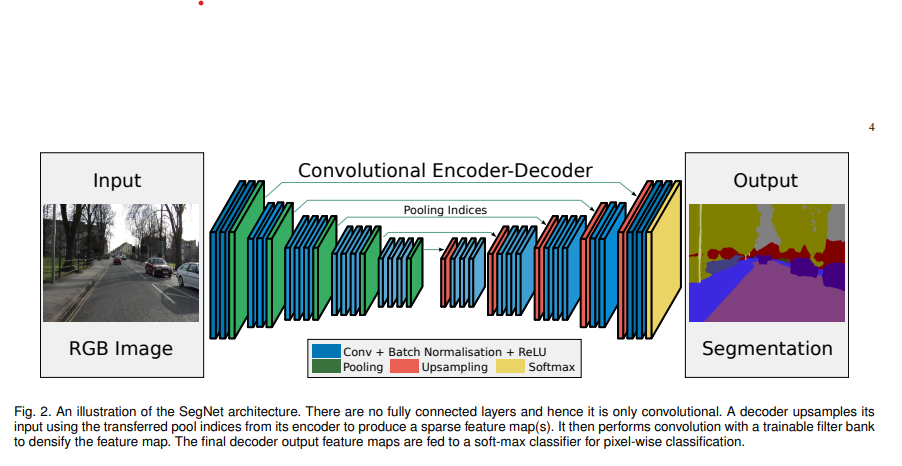

Arquitecturas de prueba para imágenes renales#
Se implementarán las arquitecturas para las redes neuronales convolucionales orientadas al análisis de imágenes de biopsias renales. Se presenta el uso de las siguientes arquitecturas subrayadas:
U-Net
V-Net (Variante de U-Net con convoluciones 3D)
SegNet (Basado en autoencoders)
DeepLabV3+ (Para segmentación de alta precisión)
Attention U-Net (Mejora la U-Net con atención)
Mask R-CNN (Segmentación basada en detección)
ResUNet (Combinación de U-Net y ResNet)
PSPNet (Utiliza pirámides de pooling)
FCN (Fully Convolutional Networks)
Swin UNet (Basado en Transformers)
Redes Neuronales Convolucionales (CNN)
Son un tipo de red neuronal diseñada para procesar datos con una estructura de tipo grid, como imágenes, mediante la aplicación de filtros convolucionales que detectan patrones y características en diferentes niveles de abstracción.
Librerías, paquetes y GPU necesarios#
# %pip install opencv-python
import numpy as np
import pandas as pd
import os
from tensorflow.keras.preprocessing.image import ImageDataGenerator
from tensorflow.keras.utils import load_img
from tensorflow.keras.models import Model
from keras.layers import Conv2D, Dense, BatchNormalization, Activation, Dropout, MaxPool2D, Flatten
from tensorflow.keras.layers import Input, MaxPooling2D, UpSampling2D
from tensorflow.keras.losses import CategoricalCrossentropy
from tensorflow.keras.utils import plot_model, to_categorical
from sklearn.metrics import roc_auc_score, jaccard_score, precision_score, recall_score, balanced_accuracy_score
from tensorflow.keras.optimizers import Adam, RMSprop, SGD
from keras.callbacks import ModelCheckpoint,EarlyStopping
from sklearn.model_selection import train_test_split
import datetime
from keras import regularizers
import matplotlib.pyplot as plt
import tensorflow as tf
import cv2
Verificación de GPU’s#
devices = tf.config.list_physical_devices()
print("Available devices:")
for device in devices:
print(device)
gpus = tf.config.list_physical_devices('GPU')
if gpus:
print("TensorFlow is using GPU.")
for gpu in gpus:
gpu_details = tf.config.experimental.get_device_details(gpu)
print(f"GPU details: {gpu_details}")
else:
print("TensorFlow is not using GPU.")
Available devices:
PhysicalDevice(name='/physical_device:CPU:0', device_type='CPU')
PhysicalDevice(name='/physical_device:GPU:0', device_type='GPU')
TensorFlow is using GPU.
GPU details: {'device_name': 'NVIDIA GeForce RTX 2050', 'compute_capability': (8, 6)}
print("GPUs detectadas:", len(tf.config.list_physical_devices('GPU')))
print("Dispositivos disponibles:")
print(tf.config.list_physical_devices())
print("GPU usada por defecto:")
print(tf.config.experimental.list_physical_devices('GPU'))
GPUs detectadas: 1
Dispositivos disponibles:
[PhysicalDevice(name='/physical_device:CPU:0', device_type='CPU'), PhysicalDevice(name='/physical_device:GPU:0', device_type='GPU')]
GPU usada por defecto:
[PhysicalDevice(name='/physical_device:GPU:0', device_type='GPU')]
print(tf.sysconfig.get_build_info())
OrderedDict([('cpu_compiler', 'C:/Program Files (x86)/Microsoft Visual Studio/2019/Community/VC/Tools/MSVC/14.29.30133/bin/HostX64/x64/cl.exe'), ('cuda_compute_capabilities', ['sm_35', 'sm_50', 'sm_60', 'sm_70', 'sm_75', 'compute_80']), ('cuda_version', '64_112'), ('cudart_dll_name', 'cudart64_112.dll'), ('cudnn_dll_name', 'cudnn64_8.dll'), ('cudnn_version', '64_8'), ('is_cuda_build', True), ('is_rocm_build', False), ('is_tensorrt_build', False), ('msvcp_dll_names', 'msvcp140.dll,msvcp140_1.dll'), ('nvcuda_dll_name', 'nvcuda.dll')])
Imágenes y máscaras a usar#
Se cargan todas la imágenes en esta sección, sin embargo para probar la arquitectura se seleccionarán posteriormente solo 5 imágenes.
data_path1 = r"C:\Users\henry\Documents\jbook\parcial1_dl\datos\train_filter"
data_path2 = r"C:\Users\henry\Documents\jbook\parcial1_dl\datos\mascaras_guardadas"
image_dir = os.path.join(data_path1, 'train_filter')
mask_dir = os.path.join(data_path2, 'mascaras_guardadas')
# Obtenemos la lista de archivos de imagen y máscara
image_files = sorted([f for f in os.listdir(image_dir) if f.endswith('tif')])
mask_files = sorted([f for f in os.listdir(mask_dir) if f.endswith('tif')])
# Función para cargar imágenes y máscaras
def cargar_imagenes_y_mascaras(image_path, mask_path):
image = cv2.imread(image_path, cv2.IMREAD_COLOR)
image = cv2.cvtColor(image, cv2.COLOR_BGR2RGB)
mask = cv2.imread(mask_path, cv2.IMREAD_GRAYSCALE)
return image, mask
# Cargar y visualizar una imagen de prueba
idx = 0 # Índice de la imagen a visualizar
image_path = os.path.join(image_dir, image_files[idx])
mask_path = os.path.join(mask_dir, mask_files[idx])
image, mask = cargar_imagenes_y_mascaras(image_path, mask_path)
# Mostrar la imagen y su máscara
fig, ax = plt.subplots(1, 2, figsize=(10, 5))
ax[0].imshow(image)
ax[0].set_title("Imagen")
ax[0].axis("off")
ax[1].imshow(mask, cmap="gray")
ax[1].set_title("Máscara")
ax[1].axis("off")
plt.show()
Implementación de arquitecturas neuronales#
SegNet - Basado en autoecoders#
Arquitectura de SegNet#
Encoder: Basado en VGG16, extrae características con capas convolucionales y de pooling.
Decoder: Reconstruye la imagen de segmentación utilizando unpooling en lugar de upsampling tradicional, lo que mejora la preservación de bordes y detalles finos.
Softmax: Produce un mapa de segmentación con probabilidades para cada clase.

Kanery le agregas la fuente
Preprocesamiento de las imágenes#
Se seleccionan solo 5 de las imágenes y máscaras.
# Obtener lista de archivos de imágenes y máscaras (solo 5 imágenes)
image_files = sorted([f for f in os.listdir(image_dir) if f.endswith('tif')])[:5]
mask_files = sorted([f for f in os.listdir(mask_dir) if f.endswith('tif')])[:5]
# Función para cargar imágenes y máscaras
def cargar_imagenes_y_mascaras(image_path, mask_path):
image = cv2.imread(image_path, cv2.IMREAD_COLOR)
image = cv2.cvtColor(image, cv2.COLOR_BGR2RGB) # Convertir a RGB
mask = cv2.imread(mask_path, cv2.IMREAD_GRAYSCALE) # Escala de grises
return image, mask
def preprocesar_imagen(image, mask):
image = image / 255.0 # Normalizar la imagen RGB
mask = mask / 255.0 # Normalizar la máscara - si es binaria queda entre [0 y 1]
mask = np.expand_dims(mask, axis=-1) # Añadir canal de profundidad
return image, mask
Observamos las imágenes y sus dimensiones.
print("Dimensiones de la imagen:", image.shape)
Dimensiones de la imagen: (512, 512, 3)
fig, axes = plt.subplots(5, 2, figsize=(10, 20))
for idx in range(5):
image_path = os.path.join(image_dir, image_files[idx])
mask_path = os.path.join(mask_dir, mask_files[idx])
image, mask = cargar_imagenes_y_mascaras(image_path, mask_path)
image, mask = preprocesar_imagen(image, mask)
axes[idx, 0].imshow(image)
axes[idx, 0].set_title(f"Imagen {idx+1}")
axes[idx, 0].axis("off")
axes[idx, 1].imshow(mask.squeeze(), cmap="gray")
axes[idx, 1].set_title(f"Máscara {idx+1}")
axes[idx, 1].axis("off")
Construcción de la arquitectura#
def build_segnet(input_shape = (512, 512, 3), num_classes = 2):
inputs = Input(shape = input_shape)
# Encoder
x = Conv2D(64, (3, 3), padding = 'same')(inputs)
x = BatchNormalization()(x)
x = Activation('relu')(x)
x = MaxPooling2D((2,2), strides =(2,2), name= 'pool1')(x)
x = Conv2D(128, (3, 3), padding = 'same')(x)
x = BatchNormalization()(x)
x = Activation('relu')(x)
x = MaxPooling2D((2, 2), strides = (2, 2), name = 'pool2')(x)
x = Conv2D(256, (3, 3), padding = 'same')(x)
x = BatchNormalization()(x)
x = Activation('relu')(x)
x = MaxPooling2D((2, 2), strides=(2, 2), name = 'pool3')(x)
#Decoder
x = UpSampling2D((2, 2))(x)
x = Conv2D(256, (3, 3), padding = 'same')(x)
x = BatchNormalization()(x)
x = Activation('relu')(x)
x = UpSampling2D((2, 2))(x)
x = Conv2D(128, (3, 3), padding = 'same')(x)
x = BatchNormalization()(x)
x = Activation('relu')(x)
x = UpSampling2D((2, 2))(x)
x = Conv2D(64, (3, 3), padding = 'same')(x)
x = BatchNormalization()(x)
x = Activation('relu')(x)
outputs = Conv2D(num_classes, (1, 1), activation = 'softmax')(x)
model = Model(inputs, outputs)
return model
# Constriur el modelo
segnet_model = build_segnet()
segnet_model.summary()
Model: "model"
_________________________________________________________________
Layer (type) Output Shape Param #
=================================================================
input_2 (InputLayer) [(None, 512, 512, 3)] 0
conv2d_2 (Conv2D) (None, 512, 512, 64) 1792
batch_normalization_2 (Batc (None, 512, 512, 64) 256
hNormalization)
activation_2 (Activation) (None, 512, 512, 64) 0
pool1 (MaxPooling2D) (None, 256, 256, 64) 0
conv2d_3 (Conv2D) (None, 256, 256, 128) 73856
batch_normalization_3 (Batc (None, 256, 256, 128) 512
hNormalization)
activation_3 (Activation) (None, 256, 256, 128) 0
pool2 (MaxPooling2D) (None, 128, 128, 128) 0
conv2d_4 (Conv2D) (None, 128, 128, 256) 295168
batch_normalization_4 (Batc (None, 128, 128, 256) 1024
hNormalization)
activation_4 (Activation) (None, 128, 128, 256) 0
pool3 (MaxPooling2D) (None, 64, 64, 256) 0
up_sampling2d (UpSampling2D (None, 128, 128, 256) 0
)
conv2d_5 (Conv2D) (None, 128, 128, 256) 590080
batch_normalization_5 (Batc (None, 128, 128, 256) 1024
hNormalization)
activation_5 (Activation) (None, 128, 128, 256) 0
up_sampling2d_1 (UpSampling (None, 256, 256, 256) 0
2D)
conv2d_6 (Conv2D) (None, 256, 256, 128) 295040
batch_normalization_6 (Batc (None, 256, 256, 128) 512
hNormalization)
activation_6 (Activation) (None, 256, 256, 128) 0
up_sampling2d_2 (UpSampling (None, 512, 512, 128) 0
2D)
conv2d_7 (Conv2D) (None, 512, 512, 64) 73792
batch_normalization_7 (Batc (None, 512, 512, 64) 256
hNormalization)
activation_7 (Activation) (None, 512, 512, 64) 0
conv2d_8 (Conv2D) (None, 512, 512, 2) 130
=================================================================
Total params: 1,333,442
Trainable params: 1,331,650
Non-trainable params: 1,792
_________________________________________________________________
# Plot model structure
plot_model(segnet_model, to_file='model_cnn.png', show_shapes=True, show_layer_names=True)
You must install pydot (`pip install pydot`) and install graphviz (see instructions at https://graphviz.gitlab.io/download/) for plot_model to work.
Ejecutar el modelo
def cargar_datos(image_dir, mask_dir, image_files, mask_files, target_size=(512, 512), num_classes=2):
images, masks = [], []
for img_name, mask_name in zip(image_files, mask_files):
# Cargar imagen
img = cv2.imread(os.path.join(image_dir, img_name))
img = cv2.resize(img, target_size) / 255.0 # Normalizar
images.append(img)
# Cargar máscara en escala de grises
mask = cv2.imread(os.path.join(mask_dir, mask_name), 0)
mask = cv2.resize(mask, target_size, interpolation=cv2.INTER_NEAREST) # Mantener etiquetas discretas
mask = mask / 255.0 # Normalizar a [0,1]
# One-hot encoding si hay más de 2 clases
if num_classes > 2:
mask = to_categorical(mask, num_classes=num_classes)
masks.append(mask)
return np.array(images), np.array(masks)
# Cargar datos de entrenamiento y validación
images, masks = cargar_datos(image_dir, mask_dir, image_files, mask_files)
# Convertir máscaras a formato categórico si hay más de 2 clases
masks = to_categorical(masks, num_classes=2)
# División en entrenamiento y validación
train_images, val_images, train_masks, val_masks = train_test_split(images, masks, test_size=0.2, random_state=42)
# Construcción y compilación del modelo
segnet_model = build_segnet()
segnet_model.compile(optimizer=Adam(learning_rate=1e-4), loss=CategoricalCrossentropy(), metrics=['accuracy'])
# Visualizar estructura del modelo
plot_model(segnet_model, to_file='model_cnn.png', show_shapes=True, show_layer_names=True)
You must install pydot (`pip install pydot`) and install graphviz (see instructions at https://graphviz.gitlab.io/download/) for plot_model to work.
# Entrenamiento del modelo
early_stopping = EarlyStopping(monitor='val_loss', patience=5, restore_best_weights=True)
history = segnet_model.fit(train_images, train_masks,
validation_data=(val_images, val_masks),
batch_size=1, epochs=50, verbose=2,
callbacks=[early_stopping])
Epoch 1/50
4/4 - 89s - loss: 0.4603 - accuracy: 0.8245 - val_loss: 0.6782 - val_accuracy: 1.0000 - 89s/epoch - 22s/step
Epoch 2/50
4/4 - 1s - loss: 0.3870 - accuracy: 0.9137 - val_loss: 0.6677 - val_accuracy: 1.0000 - 1s/epoch - 262ms/step
Epoch 3/50
4/4 - 1s - loss: 0.3338 - accuracy: 0.9706 - val_loss: 0.6459 - val_accuracy: 1.0000 - 1s/epoch - 260ms/step
Epoch 4/50
4/4 - 1s - loss: 0.2847 - accuracy: 0.9897 - val_loss: 0.6275 - val_accuracy: 1.0000 - 1s/epoch - 265ms/step
Epoch 5/50
4/4 - 1s - loss: 0.2383 - accuracy: 0.9977 - val_loss: 0.6150 - val_accuracy: 1.0000 - 1s/epoch - 256ms/step
Epoch 6/50
4/4 - 1s - loss: 0.2002 - accuracy: 0.9985 - val_loss: 0.6026 - val_accuracy: 1.0000 - 1s/epoch - 258ms/step
Epoch 7/50
4/4 - 1s - loss: 0.1692 - accuracy: 0.9994 - val_loss: 0.5819 - val_accuracy: 1.0000 - 1s/epoch - 287ms/step
Epoch 8/50
4/4 - 1s - loss: 0.1463 - accuracy: 0.9997 - val_loss: 0.5603 - val_accuracy: 1.0000 - 1s/epoch - 281ms/step
Epoch 9/50
4/4 - 1s - loss: 0.1284 - accuracy: 0.9995 - val_loss: 0.5338 - val_accuracy: 1.0000 - 1s/epoch - 261ms/step
Epoch 10/50
4/4 - 1s - loss: 0.1166 - accuracy: 0.9999 - val_loss: 0.5107 - val_accuracy: 1.0000 - 1s/epoch - 258ms/step
Epoch 11/50
4/4 - 1s - loss: 0.1071 - accuracy: 0.9998 - val_loss: 0.4850 - val_accuracy: 1.0000 - 1s/epoch - 260ms/step
Epoch 12/50
4/4 - 1s - loss: 0.1002 - accuracy: 1.0000 - val_loss: 0.4605 - val_accuracy: 1.0000 - 1s/epoch - 257ms/step
Epoch 13/50
4/4 - 1s - loss: 0.0944 - accuracy: 0.9999 - val_loss: 0.4370 - val_accuracy: 1.0000 - 1s/epoch - 263ms/step
Epoch 14/50
4/4 - 1s - loss: 0.0901 - accuracy: 1.0000 - val_loss: 0.4155 - val_accuracy: 1.0000 - 1s/epoch - 261ms/step
Epoch 15/50
4/4 - 1s - loss: 0.0861 - accuracy: 0.9999 - val_loss: 0.3933 - val_accuracy: 1.0000 - 1s/epoch - 268ms/step
Epoch 16/50
4/4 - 1s - loss: 0.0827 - accuracy: 1.0000 - val_loss: 0.3712 - val_accuracy: 1.0000 - 1s/epoch - 258ms/step
Epoch 17/50
4/4 - 1s - loss: 0.0797 - accuracy: 1.0000 - val_loss: 0.3486 - val_accuracy: 1.0000 - 1s/epoch - 260ms/step
Epoch 18/50
4/4 - 1s - loss: 0.0772 - accuracy: 1.0000 - val_loss: 0.3299 - val_accuracy: 1.0000 - 1s/epoch - 262ms/step
Epoch 19/50
4/4 - 1s - loss: 0.0748 - accuracy: 1.0000 - val_loss: 0.3111 - val_accuracy: 1.0000 - 1s/epoch - 261ms/step
Epoch 20/50
4/4 - 1s - loss: 0.0728 - accuracy: 1.0000 - val_loss: 0.2932 - val_accuracy: 1.0000 - 1s/epoch - 257ms/step
Epoch 21/50
4/4 - 1s - loss: 0.0708 - accuracy: 1.0000 - val_loss: 0.2754 - val_accuracy: 1.0000 - 1s/epoch - 261ms/step
Epoch 22/50
4/4 - 1s - loss: 0.0691 - accuracy: 1.0000 - val_loss: 0.2615 - val_accuracy: 1.0000 - 1s/epoch - 256ms/step
Epoch 23/50
4/4 - 1s - loss: 0.0675 - accuracy: 1.0000 - val_loss: 0.2484 - val_accuracy: 1.0000 - 1s/epoch - 271ms/step
Epoch 24/50
4/4 - 1s - loss: 0.0660 - accuracy: 1.0000 - val_loss: 0.2356 - val_accuracy: 1.0000 - 1s/epoch - 257ms/step
Epoch 25/50
4/4 - 1s - loss: 0.0646 - accuracy: 1.0000 - val_loss: 0.2230 - val_accuracy: 1.0000 - 1s/epoch - 255ms/step
Epoch 26/50
4/4 - 1s - loss: 0.0634 - accuracy: 1.0000 - val_loss: 0.2129 - val_accuracy: 1.0000 - 1s/epoch - 255ms/step
Epoch 27/50
4/4 - 1s - loss: 0.0621 - accuracy: 1.0000 - val_loss: 0.2022 - val_accuracy: 1.0000 - 1s/epoch - 254ms/step
Epoch 28/50
4/4 - 1s - loss: 0.0610 - accuracy: 1.0000 - val_loss: 0.1923 - val_accuracy: 1.0000 - 1s/epoch - 256ms/step
Epoch 29/50
4/4 - 1s - loss: 0.0599 - accuracy: 1.0000 - val_loss: 0.1826 - val_accuracy: 1.0000 - 1s/epoch - 259ms/step
Epoch 30/50
4/4 - 1s - loss: 0.0589 - accuracy: 1.0000 - val_loss: 0.1740 - val_accuracy: 1.0000 - 1s/epoch - 256ms/step
Epoch 31/50
4/4 - 1s - loss: 0.0579 - accuracy: 1.0000 - val_loss: 0.1670 - val_accuracy: 1.0000 - 1s/epoch - 254ms/step
Epoch 32/50
4/4 - 1s - loss: 0.0570 - accuracy: 1.0000 - val_loss: 0.1592 - val_accuracy: 1.0000 - 1s/epoch - 254ms/step
Epoch 33/50
4/4 - 1s - loss: 0.0561 - accuracy: 1.0000 - val_loss: 0.1516 - val_accuracy: 1.0000 - 1s/epoch - 256ms/step
Epoch 34/50
4/4 - 1s - loss: 0.0552 - accuracy: 1.0000 - val_loss: 0.1446 - val_accuracy: 1.0000 - 1s/epoch - 261ms/step
Epoch 35/50
4/4 - 1s - loss: 0.0544 - accuracy: 1.0000 - val_loss: 0.1383 - val_accuracy: 1.0000 - 1s/epoch - 258ms/step
Epoch 36/50
4/4 - 1s - loss: 0.0536 - accuracy: 1.0000 - val_loss: 0.1329 - val_accuracy: 1.0000 - 1s/epoch - 254ms/step
Epoch 37/50
4/4 - 1s - loss: 0.0528 - accuracy: 1.0000 - val_loss: 0.1271 - val_accuracy: 1.0000 - 1s/epoch - 263ms/step
Epoch 38/50
4/4 - 1s - loss: 0.0521 - accuracy: 1.0000 - val_loss: 0.1215 - val_accuracy: 1.0000 - 1s/epoch - 254ms/step
Epoch 39/50
4/4 - 1s - loss: 0.0514 - accuracy: 1.0000 - val_loss: 0.1165 - val_accuracy: 1.0000 - 1s/epoch - 255ms/step
Epoch 40/50
4/4 - 1s - loss: 0.0507 - accuracy: 1.0000 - val_loss: 0.1121 - val_accuracy: 1.0000 - 1s/epoch - 269ms/step
Epoch 41/50
4/4 - 1s - loss: 0.0500 - accuracy: 1.0000 - val_loss: 0.1083 - val_accuracy: 1.0000 - 1s/epoch - 255ms/step
Epoch 42/50
4/4 - 1s - loss: 0.0494 - accuracy: 1.0000 - val_loss: 0.1043 - val_accuracy: 1.0000 - 1s/epoch - 252ms/step
Epoch 43/50
4/4 - 1s - loss: 0.0487 - accuracy: 1.0000 - val_loss: 0.0999 - val_accuracy: 1.0000 - 1s/epoch - 252ms/step
Epoch 44/50
4/4 - 1s - loss: 0.0481 - accuracy: 1.0000 - val_loss: 0.0966 - val_accuracy: 1.0000 - 1s/epoch - 252ms/step
Epoch 45/50
4/4 - 1s - loss: 0.0475 - accuracy: 1.0000 - val_loss: 0.0929 - val_accuracy: 1.0000 - 1s/epoch - 252ms/step
Epoch 46/50
4/4 - 1s - loss: 0.0469 - accuracy: 1.0000 - val_loss: 0.0902 - val_accuracy: 1.0000 - 1s/epoch - 251ms/step
Epoch 47/50
4/4 - 1s - loss: 0.0464 - accuracy: 1.0000 - val_loss: 0.0865 - val_accuracy: 1.0000 - 1s/epoch - 253ms/step
Epoch 48/50
4/4 - 1s - loss: 0.0458 - accuracy: 1.0000 - val_loss: 0.0837 - val_accuracy: 1.0000 - 1s/epoch - 252ms/step
Epoch 49/50
4/4 - 1s - loss: 0.0453 - accuracy: 1.0000 - val_loss: 0.0808 - val_accuracy: 1.0000 - 1s/epoch - 252ms/step
Epoch 50/50
4/4 - 1s - loss: 0.0447 - accuracy: 1.0000 - val_loss: 0.0784 - val_accuracy: 1.0000 - 1s/epoch - 253ms/step
# Predicciones
val_preds = segnet_model.predict(val_images)
val_preds = np.argmax(val_preds, axis=-1)
val_masks_flat = np.argmax(val_masks, axis=-1)
1/1 [==============================] - 0s 213ms/step
Métricas
# Kanery esta no la uses
# # Calcular métricas de segmentación
dice = 2 * np.sum(val_preds * val_masks_flat) / (np.sum(val_preds) + np.sum(val_masks_flat) + 1e-7)
iou = jaccard_score(val_masks_flat.flatten(), val_preds.flatten(), average='macro')
precision = precision_score(val_masks_flat.flatten(), val_preds.flatten(), average='macro')
recall = recall_score(val_masks_flat.flatten(), val_preds.flatten(), average='macro')
# usa esta y la de abajo
# Calcular métricas
dice = 2 * np.sum(val_preds * val_masks_flat) / (np.sum(val_preds) + np.sum(val_masks_flat) + 1e-7)
iou = jaccard_score(val_masks_flat.flatten(), val_preds.flatten(), average='macro')
precision = precision_score(val_masks_flat.flatten(), val_preds.flatten(), average='macro')
recall = recall_score(val_masks_flat.flatten(), val_preds.flatten(), average='macro')
auc = roc_auc_score(val_masks_flat.flatten(), val_preds.flatten(), average='macro')
balanced_acc = balanced_accuracy_score(val_masks_flat.flatten(), val_preds.flatten())
# Función de Hausdorff Distance
def hausdorff_distance(pred, mask):
pred_points = np.argwhere(pred)
mask_points = np.argwhere(mask)
if len(pred_points) == 0 or len(mask_points) == 0:
return np.nan
dist1 = np.max([np.min(np.linalg.norm(pred_point - mask_points, axis=1)) for pred_point in pred_points])
dist2 = np.max([np.min(np.linalg.norm(mask_point - pred_points, axis=1)) for mask_point in mask_points])
return max(dist1, dist2)
hausdorff = hausdorff_distance(val_preds, val_masks_flat)
# Tabla resumen
metrics_df = pd.DataFrame({
"Model": ["SegNet"],
"Dice Coefficient": [dice],
"IoU": [iou],
"Precision": [precision],
"Recall": [recall],
"AUC": [auc],
"Hausdorff Distance": [hausdorff],
"Balanced Accuracy": [balanced_acc]
})
print(metrics_df)
Model Dice Coefficient IoU Precision Recall AUC Hausdorff Distance \
0 SegNet 0.0 1.0 1.0 1.0 NaN NaN
Balanced Accuracy
0 1.0
mas imagenes
image_files = sorted([f for f in os.listdir(image_dir) if f.endswith('tif')])[:50]
mask_files = sorted([f for f in os.listdir(mask_dir) if f.endswith('tif')])[:50]
early_stopping = EarlyStopping(monitor='val_loss', patience=5, restore_best_weights=True)
history = segnet_model.fit(train_images, train_masks,
validation_data=(val_images, val_masks),
batch_size=1, epochs=50, verbose=2,
callbacks=[early_stopping])
Epoch 1/50
40/40 - 11s - loss: 0.2952 - accuracy: 0.9559 - val_loss: 0.4571 - val_accuracy: 1.0000 - 11s/epoch - 282ms/step
Epoch 2/50
40/40 - 10s - loss: 0.1235 - accuracy: 0.9999 - val_loss: 0.2324 - val_accuracy: 1.0000 - 10s/epoch - 245ms/step
Epoch 3/50
40/40 - 10s - loss: 0.0667 - accuracy: 1.0000 - val_loss: 0.1486 - val_accuracy: 1.0000 - 10s/epoch - 250ms/step
Epoch 4/50
40/40 - 10s - loss: 0.0507 - accuracy: 1.0000 - val_loss: 0.1072 - val_accuracy: 1.0000 - 10s/epoch - 244ms/step
Epoch 5/50
40/40 - 10s - loss: 0.0431 - accuracy: 1.0000 - val_loss: 0.0858 - val_accuracy: 1.0000 - 10s/epoch - 247ms/step
Epoch 6/50
40/40 - 10s - loss: 0.0378 - accuracy: 1.0000 - val_loss: 0.0653 - val_accuracy: 1.0000 - 10s/epoch - 244ms/step
Epoch 7/50
40/40 - 10s - loss: 0.0340 - accuracy: 1.0000 - val_loss: 0.0549 - val_accuracy: 1.0000 - 10s/epoch - 244ms/step
Epoch 8/50
40/40 - 10s - loss: 0.0308 - accuracy: 1.0000 - val_loss: 0.0470 - val_accuracy: 1.0000 - 10s/epoch - 243ms/step
Epoch 9/50
40/40 - 10s - loss: 0.0280 - accuracy: 1.0000 - val_loss: 0.0373 - val_accuracy: 1.0000 - 10s/epoch - 244ms/step
Epoch 10/50
40/40 - 10s - loss: 0.0256 - accuracy: 1.0000 - val_loss: 0.0303 - val_accuracy: 1.0000 - 10s/epoch - 244ms/step
Epoch 11/50
40/40 - 10s - loss: 0.0234 - accuracy: 1.0000 - val_loss: 0.0244 - val_accuracy: 1.0000 - 10s/epoch - 244ms/step
Epoch 12/50
40/40 - 10s - loss: 0.0215 - accuracy: 1.0000 - val_loss: 0.0228 - val_accuracy: 1.0000 - 10s/epoch - 244ms/step
Epoch 13/50
40/40 - 10s - loss: 0.0198 - accuracy: 1.0000 - val_loss: 0.0204 - val_accuracy: 1.0000 - 10s/epoch - 246ms/step
Epoch 14/50
40/40 - 10s - loss: 0.0182 - accuracy: 1.0000 - val_loss: 0.0190 - val_accuracy: 1.0000 - 10s/epoch - 244ms/step
Epoch 15/50
40/40 - 10s - loss: 0.0169 - accuracy: 1.0000 - val_loss: 0.0169 - val_accuracy: 1.0000 - 10s/epoch - 244ms/step
Epoch 16/50
40/40 - 10s - loss: 0.0157 - accuracy: 1.0000 - val_loss: 0.0159 - val_accuracy: 1.0000 - 10s/epoch - 243ms/step
Epoch 17/50
40/40 - 10s - loss: 0.0146 - accuracy: 1.0000 - val_loss: 0.0148 - val_accuracy: 1.0000 - 10s/epoch - 243ms/step
Epoch 18/50
40/40 - 10s - loss: 0.0136 - accuracy: 1.0000 - val_loss: 0.0136 - val_accuracy: 1.0000 - 10s/epoch - 244ms/step
Epoch 19/50
40/40 - 10s - loss: 0.0127 - accuracy: 1.0000 - val_loss: 0.0127 - val_accuracy: 1.0000 - 10s/epoch - 244ms/step
Epoch 20/50
40/40 - 10s - loss: 0.0119 - accuracy: 1.0000 - val_loss: 0.0117 - val_accuracy: 1.0000 - 10s/epoch - 243ms/step
Epoch 21/50
40/40 - 10s - loss: 0.0111 - accuracy: 1.0000 - val_loss: 0.0112 - val_accuracy: 1.0000 - 10s/epoch - 243ms/step
Epoch 22/50
40/40 - 10s - loss: 0.0104 - accuracy: 1.0000 - val_loss: 0.0103 - val_accuracy: 1.0000 - 10s/epoch - 243ms/step
Epoch 23/50
40/40 - 10s - loss: 0.0098 - accuracy: 1.0000 - val_loss: 0.0099 - val_accuracy: 1.0000 - 10s/epoch - 243ms/step
Epoch 24/50
40/40 - 10s - loss: 0.0093 - accuracy: 1.0000 - val_loss: 0.0092 - val_accuracy: 1.0000 - 10s/epoch - 243ms/step
Epoch 25/50
40/40 - 10s - loss: 0.0087 - accuracy: 1.0000 - val_loss: 0.0084 - val_accuracy: 1.0000 - 10s/epoch - 243ms/step
Epoch 26/50
40/40 - 10s - loss: 0.0083 - accuracy: 1.0000 - val_loss: 0.0079 - val_accuracy: 1.0000 - 10s/epoch - 243ms/step
Epoch 27/50
40/40 - 10s - loss: 0.0078 - accuracy: 1.0000 - val_loss: 0.0078 - val_accuracy: 1.0000 - 10s/epoch - 244ms/step
Epoch 28/50
40/40 - 10s - loss: 0.0074 - accuracy: 1.0000 - val_loss: 0.0070 - val_accuracy: 1.0000 - 10s/epoch - 245ms/step
Epoch 29/50
40/40 - 10s - loss: 0.0070 - accuracy: 1.0000 - val_loss: 0.0069 - val_accuracy: 1.0000 - 10s/epoch - 250ms/step
Epoch 30/50
40/40 - 10s - loss: 0.0067 - accuracy: 1.0000 - val_loss: 0.0068 - val_accuracy: 1.0000 - 10s/epoch - 246ms/step
Epoch 31/50
40/40 - 10s - loss: 0.0063 - accuracy: 1.0000 - val_loss: 0.0063 - val_accuracy: 1.0000 - 10s/epoch - 245ms/step
Epoch 32/50
40/40 - 10s - loss: 0.0060 - accuracy: 1.0000 - val_loss: 0.0062 - val_accuracy: 1.0000 - 10s/epoch - 245ms/step
Epoch 33/50
40/40 - 10s - loss: 0.0057 - accuracy: 1.0000 - val_loss: 0.0057 - val_accuracy: 1.0000 - 10s/epoch - 246ms/step
Epoch 34/50
40/40 - 10s - loss: 0.0055 - accuracy: 1.0000 - val_loss: 0.0055 - val_accuracy: 1.0000 - 10s/epoch - 245ms/step
Epoch 35/50
40/40 - 10s - loss: 0.0052 - accuracy: 1.0000 - val_loss: 0.0051 - val_accuracy: 1.0000 - 10s/epoch - 243ms/step
Epoch 36/50
40/40 - 10s - loss: 0.0050 - accuracy: 1.0000 - val_loss: 0.0048 - val_accuracy: 1.0000 - 10s/epoch - 243ms/step
Epoch 37/50
40/40 - 10s - loss: 0.0048 - accuracy: 1.0000 - val_loss: 0.0047 - val_accuracy: 1.0000 - 10s/epoch - 243ms/step
Epoch 38/50
40/40 - 10s - loss: 0.0046 - accuracy: 1.0000 - val_loss: 0.0044 - val_accuracy: 1.0000 - 10s/epoch - 245ms/step
Epoch 39/50
40/40 - 10s - loss: 0.0044 - accuracy: 1.0000 - val_loss: 0.0042 - val_accuracy: 1.0000 - 10s/epoch - 243ms/step
Epoch 40/50
40/40 - 10s - loss: 0.0042 - accuracy: 1.0000 - val_loss: 0.0040 - val_accuracy: 1.0000 - 10s/epoch - 245ms/step
Epoch 41/50
40/40 - 10s - loss: 0.0040 - accuracy: 1.0000 - val_loss: 0.0040 - val_accuracy: 1.0000 - 10s/epoch - 246ms/step
Epoch 42/50
40/40 - 10s - loss: 0.0038 - accuracy: 1.0000 - val_loss: 0.0037 - val_accuracy: 1.0000 - 10s/epoch - 247ms/step
Epoch 43/50
40/40 - 10s - loss: 0.0037 - accuracy: 1.0000 - val_loss: 0.0035 - val_accuracy: 1.0000 - 10s/epoch - 249ms/step
Epoch 44/50
40/40 - 10s - loss: 0.0035 - accuracy: 1.0000 - val_loss: 0.0034 - val_accuracy: 1.0000 - 10s/epoch - 244ms/step
Epoch 45/50
40/40 - 10s - loss: 0.0034 - accuracy: 1.0000 - val_loss: 0.0033 - val_accuracy: 1.0000 - 10s/epoch - 243ms/step
Epoch 46/50
40/40 - 10s - loss: 0.0032 - accuracy: 1.0000 - val_loss: 0.0031 - val_accuracy: 1.0000 - 10s/epoch - 243ms/step
Epoch 47/50
40/40 - 10s - loss: 0.0031 - accuracy: 1.0000 - val_loss: 0.0031 - val_accuracy: 1.0000 - 10s/epoch - 243ms/step
Epoch 48/50
40/40 - 10s - loss: 0.0030 - accuracy: 1.0000 - val_loss: 0.0030 - val_accuracy: 1.0000 - 10s/epoch - 243ms/step
Epoch 49/50
40/40 - 10s - loss: 0.0029 - accuracy: 1.0000 - val_loss: 0.0027 - val_accuracy: 1.0000 - 10s/epoch - 243ms/step
Epoch 50/50
40/40 - 10s - loss: 0.0028 - accuracy: 1.0000 - val_loss: 0.0027 - val_accuracy: 1.0000 - 10s/epoch - 243ms/step
# Predicciones
val_preds = segnet_model.predict(val_images, batch_size=1) # Reduce batch size to 1
val_preds = np.argmax(val_preds, axis=-1)
val_masks_flat = np.argmax(val_masks, axis=-1)
10/10 [==============================] - 1s 86ms/step
print(metrics_df)
Model Dice Coefficient IoU Precision Recall AUC Hausdorff Distance \
0 SegNet 0.0 1.0 1.0 1.0 NaN NaN
Balanced Accuracy
0 1.0